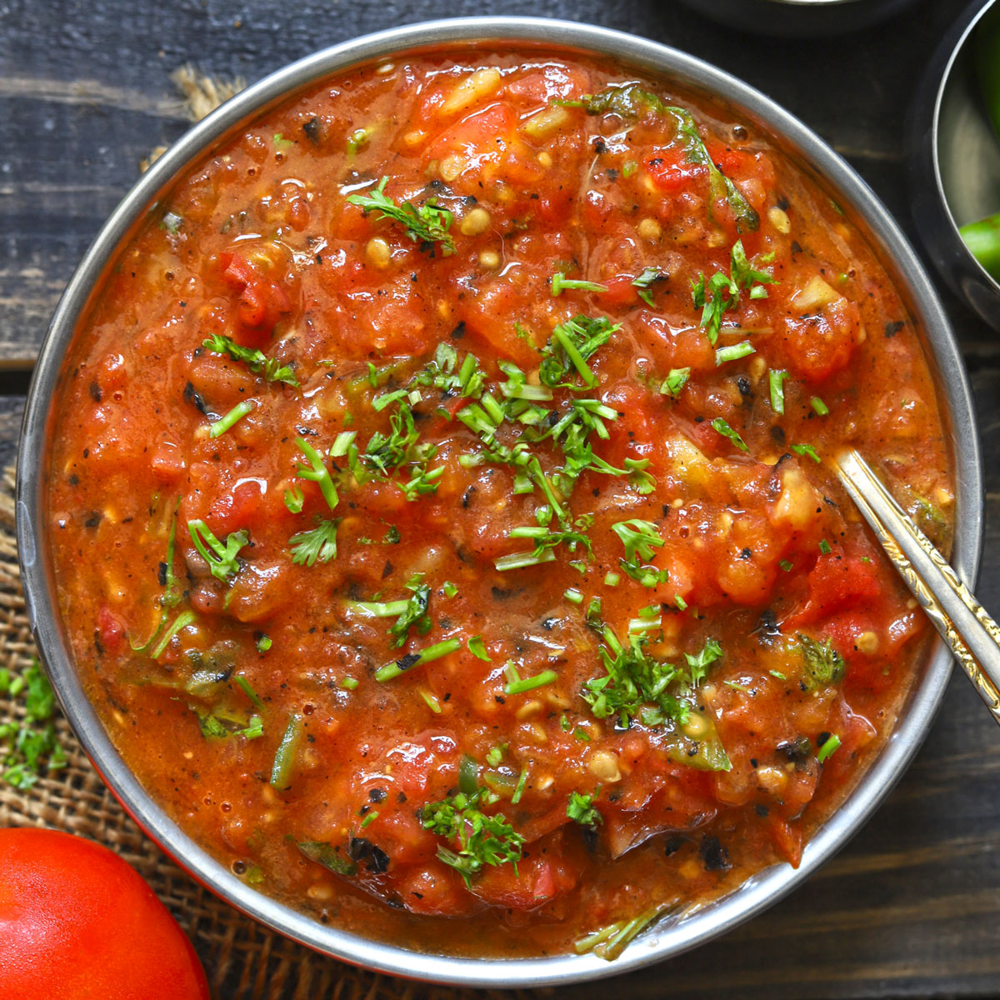

🍅 Tameta ni Chutney

Ingredients
- 3 ripe tomatoes (chopped)
- 2 tbsp oil
- 1/2 tsp mustard seeds
- 1/2 tsp cumin seeds
- 1/4 tsp asafoetida (hing)
- 1-2 green chilies (chopped)
- 1/2 tsp turmeric powder
- 1 tsp red chili powder
- 1 tbsp jaggery or sugar (adjust to taste)
- Salt to taste
- Fresh coriander leaves for garnish
Instructions
- Heat oil in a pan. Add mustard seeds and let them crackle.
- Add cumin seeds, asafoetida, and green chilies. Sauté for a few seconds.
- Add chopped tomatoes, turmeric powder, red chili powder, and salt.
- Cook on medium flame until tomatoes soften and break down.
- Add jaggery/sugar and mix well. Let it simmer for 2–3 minutes.
- Mash slightly with the back of a spoon for a chunky texture or blend for a smooth chutney.
- Garnish with fresh coriander leaves. Serve warm or chilled.
Serve With
- Thepla or Rotli
- Bhakri
- As a side with rice and dal
💡 Tip: Add crushed peanuts for a crunchy twist or a spoon of sesame seeds for extra flavor.